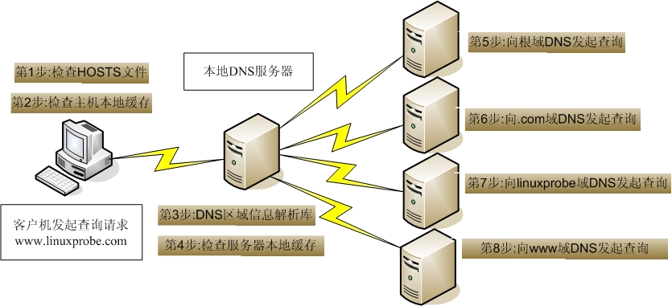
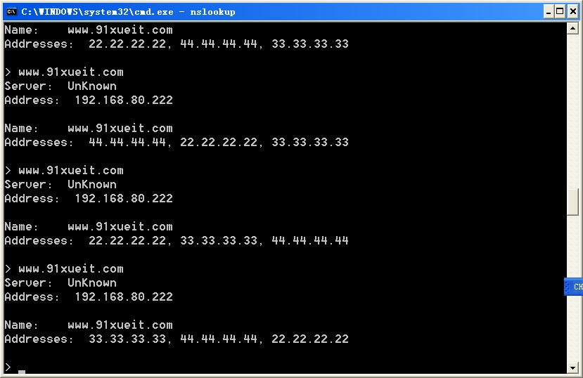

DNS
基本概念：
DNS是Domain Name System的缩写，即域名系统。DNS服务主要功能是将域名转换为相应的IP地址
DNS服务器可以分为3种，即主域名服务器(Master DNS)、辅助域名服务器(Slave DNS)、缓存服务器
Master DNS:
本身提供DNS 服务，并且本身含有区域数据文件，管理和维护所负责解析的域内解析库的服务器
Slave DNS：
和Master一起提供DNS服务，当Master服务器上的配置信息修改的时候，从主DNS服务器或其它的从DNS服务器那里“复制”（区域传递）一份解析库；
序列号：解析库的版本号；前提：主服务器解析库内容发生变化，其序列递增；
刷新时间间隔：从服务器从主服务器请求同步解析库的时间间隔；
重试时间间隔：从服务器从主服务器请求同步解析库失败时，再次尝试的时间间隔；
过期时长：从服务器始终联系不到主服务器时，多久多后放弃从服务器角度，停止提供服务；
缓存服务器(转发器)：
没有自己的区域数据文件，只是帮助客户端向外部DNS请求查询，然后将查询的结果保存到它的缓存中。
“通知” 机制：主服务器解析库发生变化时，会主动通知从服务器
区域传送：
全量传送：传送整个解析库
增量传送：传递解析库变化的那部分内容
端口 ：tcp(用于同步）/udp（用于查询）53
本地名称解析配置文件：hosts
/etc/hosts
DNS域名：
根域：.
一级域名：com,edu,mil,gov,net,org,int,arpa
二级域名：
三级域名：
工作原理：
当客户端输入一个网址时，
1.客户端先去查找hosts文件是否有与之相匹配的IP地址，有则返回结果，
2.没有则去查找DNS服务的本地缓存，有则返回，
3.没有则会发送请求到DNS服务器，有则返回结果，
4.没有则DNS服务器，会去查找服务器缓存，有则返回，
5.没有DNS服务器则会直接找根，根指向其下面顶级域可能有，这样DNS则会找顶级域，顶级域表示自己也不负责该区域，而自己包含该网址的二级可能有，这样以此查找，查找到负责该区域的域，有该网址的对应IP地址，则返回肯定答案，没有则返回否
一次完整的查询请求经过的流程：
Client --> hosts文件 --> DNS Service
Local Cache --> DNS Server (recursion) --> Server Cache --> iteration(迭代) -->

DNS查询类型：
递归查询 recursion
迭代查询 iteration
名称服务器：域内负责解析本域内的名称的主机；
根服务器：13组服务器
解析类型：
Name --> IP
IP --> Name
注意：正反向解析是两个不同的名称空间，是两棵不同的解析树
资源记录
定义的格式：
语法：name [TTL] IN rr_type value
注意：
(1) TTL可从全局继承；
(2) @可用于引用当前区域的名字；
(3) 同一个名字可以通过多条记录定义多个不同的值；此时DNS服务器会以轮询方式响应；
(4) 同一个值也可能有多个不同的定义名字；通过多个不同的名字指向同一个值进行定义；此仅表示通过多个不同的名字可以找到同一个主机而已
1.SOA:
name [TTL] IN SOA MAIL (VALUE)
name: 当前区域的名字，例如“magedu.com.”；
value: 有多部分组成
(1) 当前区域的主DNS服务器的FQDN，也可以使用当前区域的名字；
(2) 录前区域管理员的邮箱地址；但地址中不能使用@符号，一般用.替换，例如linuxedu.magedu.com；
(3) (主从服务协调属性的定义以及否定的答案的统一的TTL)
例如：
$TTL 1d
@ IN SOA ns1.magedu.com. admin.magedu.com. (
20181101 ;序列号
2H ;刷新时间
10M ;重试时间
1W ;过期时间
1D ;否定答案的TTL值
)
2.NS记录：
name IN NS VALUE
name：当前区域的名称
VALUE：当前区域的DNS服务器的名称
例如：
magedu.com. IN NS ns1.magedu.com.
3.MX:
name: 当前区域的名字
value: 当前区域的某邮件服务器(smtp服务器)的主机名；
一个区域内，MX记录可有多个；但每个记录的value之前应该有一个数字(0-99)，表示此服务器的优先级；数字越小优先级越高；
例如：
magedu.com. IN MX 10 mx1.magedu.com.
IN MX 20 mx2.magedu.com.
注意：
(1) 对MX记录而言，任何一个MX记录后面的服务器名字，都应该在后续有一个A记录
4.A
name: 某主机的FQDN，例如www.magedu.com.
value: 主机名对应主机的IP地址；
例如：
mx1.magedu.com. IN A 1.1.1.3
mx2.magedu.com. IN A 1.1.1.3
注意：
*.magedu.com. IN A 1.1.1.4
magedu.com. IN A 1.1.1.4
避免用户写错名称时给错误答案，可通过泛域名解析进行解析至某特定地址；
5.AAAA:
name: FQDN
value: IPv6
6.PTR:
name: IP，有特定格式，把IP地址反过来写，1.2.3.4，要写作4.3.2.1；而有特定后缀：in-addr.arpa.，所以完整写法为：4.3.2.1.in-addra.arpa.
value: FQDN
例如：
4.3.2.1.in-addr.arpa. IN PTR www.magedu.com
简写成：
4 IN PTR www.magedu.com.
注意：网络地址及后缀可省略；主机地址依然需要反着写；
7.CNAME：
name: 别名的FQDN
value: 名字的FQDN；
例如：
web.magedu.com. IN CNAME www.magedu.com.
DNS服务器
dns服务，程序包名bind，程序名named
程序包：
bind
bind-libs
bind-utils
bind-chroot: /var/named/chroot/
rndc: remote name domain controller，提供辅助性的管理功能；
953/tcp
bind：
服务脚本：/etc/rc.d/init.d/named
/usr/lib/systemd/system/named.service
解析库文件：/var/named/
语法检查：named-checkconf
主配置文件：/etc/named.conf
全局配置：options {}
日志子系统配置：logging {}
区域定义：本机能够为哪些zone进行解析，就要定义哪些zone；
zone "ZONE_NAME" IN {}
注意：任何服务程序如果期望其能够通过网络被其它主机访问，至少应该监听在一个能与外部主机通信的IP地址上
/etc/named.rfc1912.zones
/etc/rndc.key
注意：
(1) 一台物理服务器可同时为多个区域提供解析；
(2) 必须要有根区域文件；named.ca
(3) 应该有两个（如果包括ipv6的，应该更多）实现localhost和本地回环地址的解析库；
缓存DNS服务器的配置：
监听外部地址即可
dnssec: 建议关闭dnssec，设为no
示例：/etc/named.conf
options {
listen-on port 53 {{ 外部IP; }};
dnssec-enable no;
dnssec-validation no;
}
主DNS名称服务器配置
正向区域：
一般在/etc/named.rfc1912.zones中定义
zone "ZONE_NAME" IN {
type {master|slave|hint|forward};
file "ZONE_NAME.zone";
};
示例：
定义区域解析库文件
/var/name/yh.com.zone
示例：
$TTL 86400
$ORIGIN yh.com.
@ IN SOA ns1 admin (
2015042201
1H
5M
7D
1D )
IN NS ns1
IN NS ns2
IN MX 10 mx1
IN MX 20 mx2
mx1 IN A 192.168.0.1
mx2 IN A 192.168.0.2
ns1 IN A 192.168.0.188
ns2 IN A 192.168.0.189
www IN A 199.247.21.135
解析库文件语法检查：
named-checkzone "zone_name.zone" /var/named/zone.name.zone
反向区域：
区域名称：网络地址反写.in-addr.arpa.
172.16.100. --> 100.16.172.in-addr.arpa.
(1) 定义区域
zone "ZONE_NAME" IN {
type {master|slave|forward}；
file "网络地址.zone"
};
(2) 区域解析库文件
注意：不需要MX和A，以及AAAA记录；以PTR记录为主；
示例：
$TTL 86400
$ORIGIN 0.168.192.in-addr.arpa.
@ IN SOA ns1.magedu.com. admin.magedu.com. (
2015042201
1H
5M
7D
1D )
IN NS ns1.magedu.com.
IN NS ns2.magedu.com. #对于反向区域文件来说，从服务器的NS记录是必须写全，否则区域文件的同步会有问题，
注意：正反向解析是两个不同的名称空间，是两棵不同的解析树；
从DNS服务器配置
主从复制：
1、应该为一台独立的名称服务器；
2、主服务器的区域解析库文件中必须有一条NS记录是指向从服务器；
IN NS ns1
IN NS ns2
3、从服务器只需要定义区域，而无须提供解析库文件；解析库文件应该放置于/var/named/slaves/目录中;
4、主服务器得允许从服务器作区域传送；
allow-transfer { ip; };
5、主从服务器时间应该同步，可通过ntp进行；
6、bind程序的版本应该保持一致；否则，应该从高，主低；
定义从区域的方法：
zone "ZONE_NAME" IN {
type slave;
masters { MASTER_IP; };
file "slaves/ZONE_NAME.zone";
};
DNS支持两种域维护的方式：全量传输（AXFR）和增量传输（IXFR）
全量传输AXFR
全量传输时，DNS从服务器会从DNS主服务器上请求区域文件，其间隔时间由SOA记录中的refresh标签所定义。请求区域文件的过程是DNS从服务器向DNS主服务器发送查询来实现的，如果DNS主服务器中SOA记录中的序列号(serial)大于DNS从服务器SOA记录的序列号，DNS从服务器就会向DNS主服务器发送全量传输请求。全量传输使用TCP的53端口进行传输。
增量传输IXFR
传递非常大的区域文件是非常耗资源的（时间、带宽等），尤其是只有区域中的一个记录改变的时候，没有必要传递整个区域文件，增量传输是允许DNS主服务器和DNS从服务器之间只传输那些改变的记录。
通告notify
DNS从服务器会每隔SOA记录中的设置refresh时间值来向DNS主服务器主服务器发送请求，只有在主服务器的serial大于从服务器的serial时才进行传输，但是倘若refresh值设置得比较大，那么有可能在这段时间中就会积累大量的更新，此时DNS的时效性就会很差。
此时notify通告就提供了这样的功能：DNS主服务器的zone文件发生改变后，它立即向从服务器发送一个NOTIFY消息，告诉从服务器我的zone文件发生改变了，接着从服务器马上对比两者的序列号，再采用上面介绍的全量传输或者增量传输的方法请求zone文件。BIND本身支持通告，通告的配置是在named.conf中的zone中的option中配置，配置指令是notify, also-notify和notify-source。
DNS转发服务器
注意：被转发的服务器需要能够为请求者做递归，否则，转发请求不予进行；
(1) 全部转发: 凡是对非本机所有负责解析的区域的请求，统统转发给指定的服务器；
Options {
forward {first|only}
fowwarders { iP; };
}
first意思是如果请求不能得到响应，则DNS会向根一级级询问，而only如果不能响应就会报无法解析。
(2) 区域转发：仅转发对特定的区域的请求至某服务器；
zone "ZONE_NAME" IN {
type forward;
forward {first|only} #only表示仅转发 ；first表示先进行转发，如果没查询到结果，那么它自己还会根据根提示向外迭代查询
forwarders { iP; };
}
注意：关闭dnssec功能：
dnssec-enable no;
dnssec-validation no;
子域
子域授权:每个域的名称服务器，都是通过其上级名称服务器在解析库进行授权
正向解析区域子域方法：
如果主机不多，则直接加子域的A记录即可，如果主机较多，则可单建一个独立子域。
当然也可以把父域和子域分离在两台主机上，此时需在父域主机的zone里上定义
name NS dnsN
dns10 A IP
之后在子域的主机上直接像定义父域那样定义zone就OK了，这样就实现的父子域分离，原理就像根域往下指派子域一样
类似根域授权tld:
.com. IN NS ns1.com.
.com. IN NS ns2.com.
ns1.com. IN A 2.2.2.1
ns2.com. IN A 2.2.2.2
magedu.com. 在.com的名称服务器上，解析库中添加资源记录：
magedu.com. IN NS ns1.magedu.com.
magedu.com. IN NS ns2.magedu.com.
ns1.magedu.com. IN A 3.3.3.1
ns2.magedu.com. IN A 3.3.3.2
bind中基础的安全相关的配置：
acl: 把一个或多个地址归并为一个集合，并通过一个统一的名称调用；
acl acl_name {
ip;
net/prelen;
};
示例：
acl mynet {
172.16.0.0/16;
}
bind有四个内置的acl:
none: 没有一个主机；
any: 任意主机；
local: 本机；
localnet: 本机的IP同掩码运算后得到的网络地址；
注意：只能先定义，后使用；因此，其一般定义在配置文件中options的前面；
访问控制的指令：
allow-query { ip; }： 允许查询的主机；白名单；
allow-transfer { ip; }：允许区域传送的主机；白名单；
allow-recursion { ip; }: 允许递归的主机；建议全局建议
allow-update { ip; }: 允许更新区域数据库中的内容；一般为none
智能dns
CDN: Content Delivery Network

view:视图：实现智能DNS
一个bind服务器可定义多个view，每个view中可定义一个或多个zone；
每个view用一来匹配一组客户端；
多个view内可能需要对同一个区域进行解析，但使用不同的区域解析库文件；
view VIEW_NAME {
match-clients { ip; };
}
注意：
(1) 一旦启用了view，所有的zone都只能定义在view中；
(2) 仅有必要在匹配到允许递归请求的客户所在view中定义根区域；
(3) 客户端请求到达时，是自上而下检查每个view所服务的客户端列表；
1.配置/etc.named.conf
1 | acl "telecom"{ |
2.配置/etc/named.rfc1912.zones
1 | view telecom { |
3.新建 /var/named/yh.com.zone.unicom
/var/named/yh.com.zone.telecom
4.检查相应的配置文件,重启，解析测试
使用DNS支持镜像Web站点
vi /etc/named.conf
options {
rrset-order { order random; };
};
rrset-order 支持三个参数：fixed, random, cyclic 。
fix 会将多个A记录按配置文件的顺序固定给出
random 会随机给出
cyclic 会循环给出
在区域文件给一个域名添加多个IP地址。
vi /var/named/named.91xueit.com.liantong
$TTL 1D
91xueit.com. IN SOA webserver.91xueit.com. han@hotmail.com. (
0 ;serial
1D ;refresh
1H ;retry
1W ;expire
3H ;minimum
);
91xueit.com. IN NS webserver.91xueit.com.
91xueit.com. IN MX 10 mail
webserver IN A 192.168.80.222
www IN A 22.22.22.22
IN A 33.33.33.33
IN A 44.44.44.44

DNS工具
测试命令：dig的使用
dig [-t type] name [@SERVER] [query options]
dig用于测试dns系统，因此，不会查询hosts文件进行解析；
查询选项：
+[no]trace：跟踪解析过程
+[no]recurse：进行递归解析
测试反向解析：
dig -x IP @SERVER
模拟区域传送：
dig -t axfr ZONE_NAME @SERVER
例如：dig -t axfr magedu.com @172.16.100.11
host命令：
host [-t type] name [SERVER]
nslookup命令：
nslookup [-option] [name | -] [server]
交互式模式：
nslookup>
server IP: 指明使用哪个DNS server进行查询；
set q=RR_TYPE: 指明查询的资源记录类型；
NAME: 要查询的名称；
rndc命令
953/tcp
rndc COMMAND
COMMAND
reload：重载主配置文件和区域解析库文件
reload zonename：重载区域解析库文件
retransfer zonename: 手动启动区域传送，而不管序列号是否增加
notify zonename: 重新对区域传送发通知
reconfig: 重载主配置文件
querylog: 开启或关闭查询日志文件/var/log/message
trace: 递增debug一个级别
trace LEVEL: 指定使用的级别
notrace：将调试级别设置为 0
flush：清空DNS服务器的所有缓存记录
DNS排错
NOERROR不代表没有问题，也可以是过时的记录
查看是否为权威记录，flags:aa标记判断 被删除的记录仍能返回结果，可能是因为*记录存在
如：*.example.com． IN A 172.25.254.254
注意“.”的使用
避免CNAME指向CNAME记录，可能产生回环
test.example.com. IN CNAME lab.example.com.
lab.example.com. IN CNAME test.example.com.
正确配置PTR记录，许多服务依赖PTR，如sshd,MTA
正确配置轮询round-robin记录
打开日志功能
rndc querylog
rndc status
queryperf -d test.txt -s 127.0.0.1
wc -l /var/log/message
压力测试
vim test.txt
www.magedu.com A
magedu.com NS
magedu.com MX
pop3.magedu.com A
web.magedu.com A
queryperf -d test.txt -s 127.0.0.1